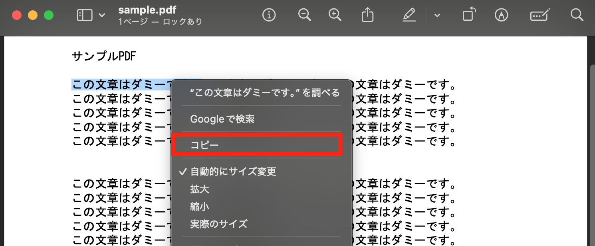
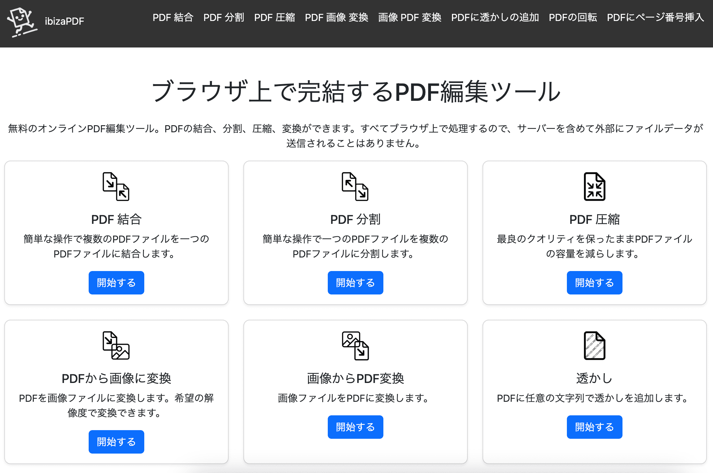

【2024年最新版】【安全】【プレビューで完結】インストール不要！MacでできるPDF編集方法解説
はじめに
「複数のPDFを1つにまとめて、資料を整理したい」
「PDFの一部だけを抜き出して、必要な情報だけを共有したい」
「セキュリティに不安を感じることなく、PDFを編集したい」
MacでPDFを編集したいけど、ソフトをインストールするのは面倒だし、セキュリティ面も心配…そう思っていませんか？
実は、Macには標準搭載の機能でPDFを編集できる方法があるんです！
この記事では、MacのFinderとプレビューアプリを使った、インストール不要でセキュリティも強固なPDF編集方法を紹介します。 さらに、より高度な編集をしたい方向けに、ibizaPDFを使ったPDF編集方法も解説します。
目次 ▼
FinderでPDFを結合する方法
MacのFinderを使えば、複数のPDFを簡単に結合できます。外部ソフトをインストールする必要がないので、セキュリティ面も安心です。
手順
- Finderで結合したいPDFファイルを選択します。
- 選択したファイルのいずれかを右クリックし、「クイックアクション」>「PDFを作成」を選択します。
- 結合されたPDFファイルが同じ場所に作成されます。
ファイルの結合順は、Finderで選択した順番になります。結合前に順番を確認しましょう。
プレビューでできるPDF編集
Macに標準搭載されている「プレビュー」アプリでも、PDFの編集ができます。
テキストの選択とコピー
プレビューでは、PDF内のテキストを選択してコピーすることができます。これは、PDFの内容を他のアプリケーションに貼り付けたい場合に便利です。
- プレビューでPDFを開きます。
- マウスでテキストをドラッグして選択します。
- 右クリックをして[コピー] を選択するか、Command + C キーを押します。 
線、図形、矢印の追加
プレビューでは、線、図形、矢印などをPDFに追加することができます。これは、PDFに注釈を付けたり、図形を描画したりする場合に便利です。
- プレビューでPDFを開き、 [マークアップツールバー] を表示します。
- [図形] ツール（四角形と円のアイコン）をクリックし、線、図形、矢印を選択します。
- 図形の色、線の太さ、塗りつぶしなどを調整します。
- PDF上でドラッグして図形を描画します。
テキストボックスの追加
プレビューでは、テキストボックスをPDFに追加することができます。これは、PDFにコメントを追加したり、テキストを強調したりする場合に便利です。
- プレビューでPDFを開き、 [マークアップツールバー] を表示します。
- [テキスト] ツール（"あ" のアイコン）をクリックします。
- テキストボックスが表示されるので、好きな場所にドラッグしてテキストを入力します。
- フォント、サイズ、色などを調整します。
署名を追加
プレビューでは、PDFに署名を追加することができます。これは、契約書や同意書などに署名が必要な場合に便利です。
- プレビューでPDFを開き、 [マークアップツールバー] を表示します。
- [署名] ツール（筆記体のサインのアイコン）をクリックします。
- [署名を作成] を選択し、トラックパッドを使って署名を作成するか、紙に書いた署名をカメラで取り込みます。カメラはiPhoneやiPadも使えます。 （トラックパッドは描きにくいかも、、画像の「署名」のような書体になります。）
- 作成した署名を選択し、PDF上の署名を追加したい場所にドラッグします。
注釈（メモ）を追加
プレビューでは、PDFに注釈（メモ）を追加することができます。これは、PDFにコメントや説明を追加したい場合に便利です。
- プレビューでPDFを開き、 [マークアップツールバー] を表示します。
- [メモ] ツール（吹き出しのアイコン）をクリックします。
- 注釈を追加したい場所をクリックします。
- 注釈ボックスが表示されるので、テキストを入力します。
テキストのハイライト、アンダーライン、取り消し線
プレビューでは、PDF内のテキストをハイライト、アンダーライン、取り消し線の追加をすることができます。
- プレビューでPDFを開きます。
- [ハイライト] ツール（蛍光ペンのアイコン）をクリックします。
- ハイライト、アンダーライン、取り消し線を追加したいテキストをドラッグします。
- ハイライトの色を変更するには、 [ハイライトの色] をクリックします。
画像、PDFの追加
プレビューでは、PDFに画像や別のPDFを追加することができます。これは、PDFに図表や写真、別のPDFを挿入したい場合に便利です。 ただし、画像は追加する位置が選べないので実用性は低いかも、、
- プレビューでPDFを開きます。
- [編集] メニュー > [挿入] > [ファイルからのページ] を選択します。
- 追加したい画像ファイル、PDFファイルを選択します。
ページの回転、並べ替え
プレビューでは、PDFのページを回転したり、並べ替えたりすることができます。これは、PDFのページの向きを修正したり、ページの順番を変更したりする場合に便利です。
- プレビューでPDFを開きます。
- 上部の [回転] ボタンをクリックします。
- 表示中のページが反時計回りで回転します。
PDFの結合、抽出、分割、並び替え
プレビューでは、複数のPDFを結合したり、1つのPDFを複数のファイルに分割したり、ページの並べ替えをすることができます。 これは、複数のPDFを1つのファイルにまとめたり、必要なページだけを抽出したり、ページを並べ替えたりする場合に便利です。
結合
- サイドバーの [サムネール] ボタンをクリックして、サムネールを表示します。
- 各PDFのサムネールを表示します。
- 1つのPDFのサムネールを、別のPDFのサムネールにドラッグアンドドロップします。
抽出・分割
- サイドバーの [サムネール] ボタンをクリックして、サムネールを表示します。
- 抽出したいページのサムネールをデスクトップにドラッグアンドドロップします。
- 抽出するページを Command を押しながら複数選択すると、PDFの分割ができます。
並び替え
- サイドバーの [サムネール] ボタンをクリックして、サムネールを表示します。
- 移動したいページをドラッグ&ドロップで移動させます。

ibizaPDFでPDFを編集する方法
より手軽にセキュアな方法でPDF編集を行いたい場合は、ibizaPDFの利用がおすすめです。ibizaPDFはサーバーにデータを送信せず、安全に編集ができるのが特徴のWebサービスです。
ibizaPDFでできること
- PDFの結合
- PDFと画像の変換
- PDFの圧縮
- PDFへのページ番号追加
- PDFの回転
- PDFからページの抽出
- PDFへ透かしを追加
ibizaPDFはブラウザ上で動作するPDF編集サービスです。サイトにアクセスすればすぐに使える手軽さもありながら、サーバーにデータを送信することのないというセキュリティの 高さから人気の高いサービスです。
ibizaPDF まとめ
Macでは、Finderやプレビューなどの標準機能でPDFを編集することができます。これらの方法はインストール不要でセキュリティも強固なので、安心して利用できます。 より手軽に編集をしたい場合は、ibizaPDFの利用も検討しましょう。